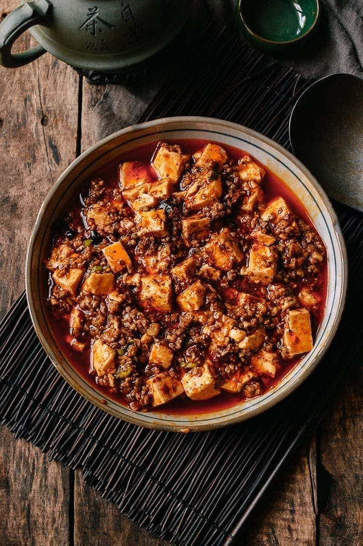

Mapo Tofu

Description
This is one of my favorite Chinese recipes. Mapo tofu is a popular dish originated
from Sichuan Province. I love the tongue-numbing sentation of the
Sichuan peppercorns! This recipe is taken from The Woks of Life.
Ingredients
- 1/2 cup of oil
- 1-2 thinly sliced Thai bird chilli peppers
- 6-8 roughly chopped, dried red chillies
- 1/2 to 1 1/2 tablespoons of Sichuan peppercorns
- 3 tablespoons of ginger
- 3 tablespoons of garlic
- 8 ounces of ground pork
- 1-2 tablespoons of spicy bean sauce
- 2/3 cup of low sodium chicken brother
- 1 pound of silken tofu
- 1 1/2 teaspoons of cornstorch
- 1/4 teaspoon of sesame oil
- 1/4 teaspoon sugar
- 1 scallion
Directions
- First, we toast the chilies. If you have homemade toasted chili oil, you can skip this step.
Heat your wok or a small saucepan over low heat.
Add ¼ cup of the oil and throw in the fresh and dried peppers.
Stir occasionally and heat until fragrant, about 5 minutes, ensuring that the peppers don’t burn.
Remove from heat and set aside.
- eat the remaining ¼ cup of oil in your wok over medium heat.
Add the ginger. After 1 minute, add the garlic. Fry for another minute, and then turn up the heat to high and add the ground pork.
Break up the meat and fry it until it’s cooked through.
Add your ground Sichuan peppercorns and stir for about 15-30 seconds, taking care to not let it burn, as it will turn bitter if it does.
- Add the spicy bean sauce to the mixture and stir it in well.
Add ⅔ cups of chicken broth to the wok and stir.
Let this simmer for a minute or so.
While that's happening, ready your tofu and also put a ¼ cup of water in a small bowl with your cornstarch and mix until thoroughly combined.
-
Add the cornstarch mixture to your sauce and stir.
Let it bubble away until the sauce starts to thicken.
(If it gets too thick, splash in a little more water or chicken stock.)
-
Then add your chili oil from before—peppers and all!
If you are using homemade chili oil, ONLY use the standing oil, as it's likely that you have salted it and you only want the oil, not additional salt.
Stir the oil into the sauce, and add the tofu. Use your spatula to gently toss the tofu in the sauce.
Let everything cook for 3-5 minutes. Add the sesame oil and sugar (if using) along with the scallions and stir until the scallions are just wilted.
-
Serve with a last sprinkle of Sichuan peppercorn powder as a garnish if desired.